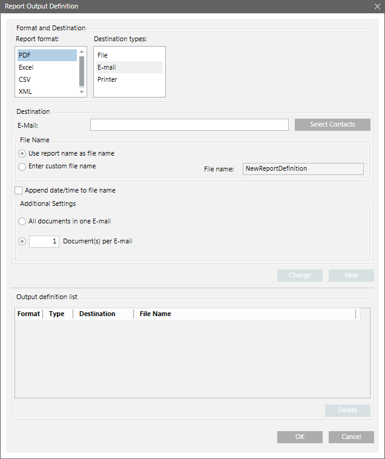
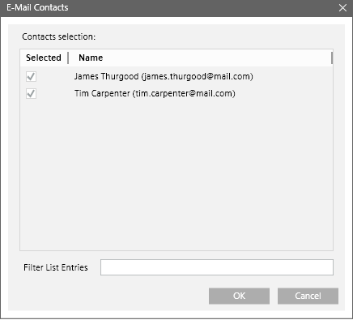
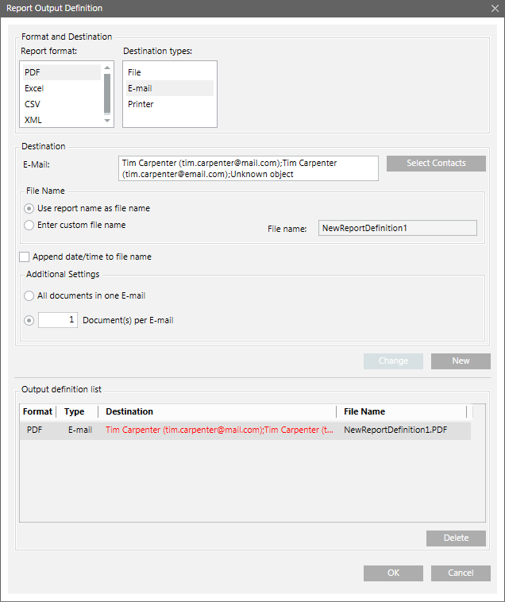
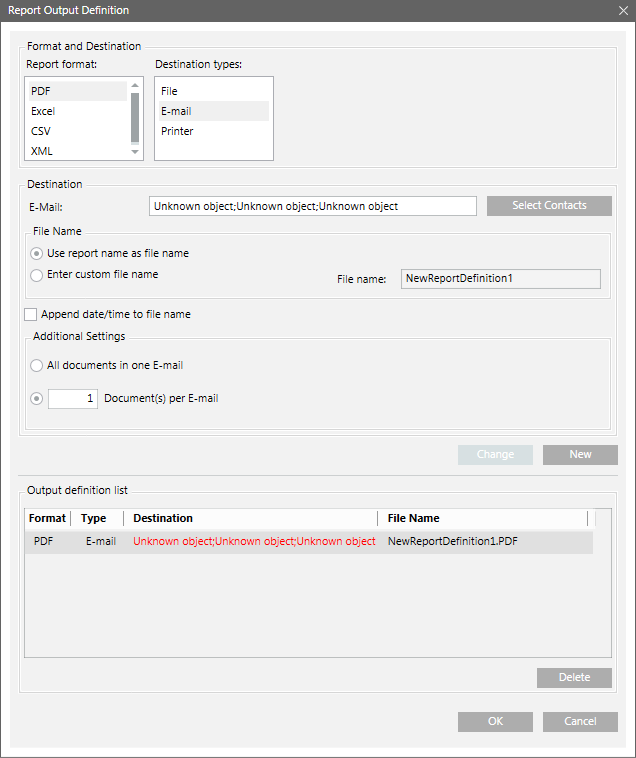

Destination Type - Email
The Report Output Definition dialog box allows you to send a report via email. You can send all documents in one mail or configure the number of documents to be sent per email. The default is one document per email. Before sending an email you must configure the mail server.

The Email Contacts dialog box displays when you select the destination type as Email and then click the Select Contacts button. This dialog box allows you to choose and filter from the list of all recipients having email addresses configured in the Contactsselection list.

Email Contacts Dialog Box Components | |
Field | Description |
Contacts selection | Shows the names of the configured contacts in the Recipients Editor tab of the Notification application followed by their email address in brackets. This list is sorted alphabetically. |
Filter List Entries | Allows you to type in a filter. For example, if you type the letter “A”, the recipient list displays all the contacts starting with the letter A. |
Automatic Update of Configured Email Addresses
The Output Definition list in the Report Output Definition dialog box and Contacts selection list in the Email Contacts dialog box updates automatically, if you change or delete the email address of a particular recipient in Recipients Editor tab of the Notification application.
Action | Result |
A recipient email address is changed in the Recipients Editor tab | The new email address reflects in the Output Definition list in the Report Output Definition dialog box and Contacts section list in the Email Contacts dialog box. |
A listed email address of the configured contact is deleted in the Recipients Editor tab | The list of email addresses in the Output Definition list in the Report Output Definition dialog box displays in red. On moving your mouse pointer over the text, the following tooltip message displays: |
The report is run by clicking the Execute button in the Extended Operation tab | Report is routed to the valid email addresses configured in the report output definition. |
A recipient is deleted from the Recipients Editor tab | The list of email addresses in the Output Definition list in the Report Output Definition dialog box displays in red. On moving your mouse pointer over the text, the following tooltip message displays: |
Listed email address of the configured contact deleted in Recipients Editor tab | Recipient deleted from the Recipients Editor tab |
 |  |